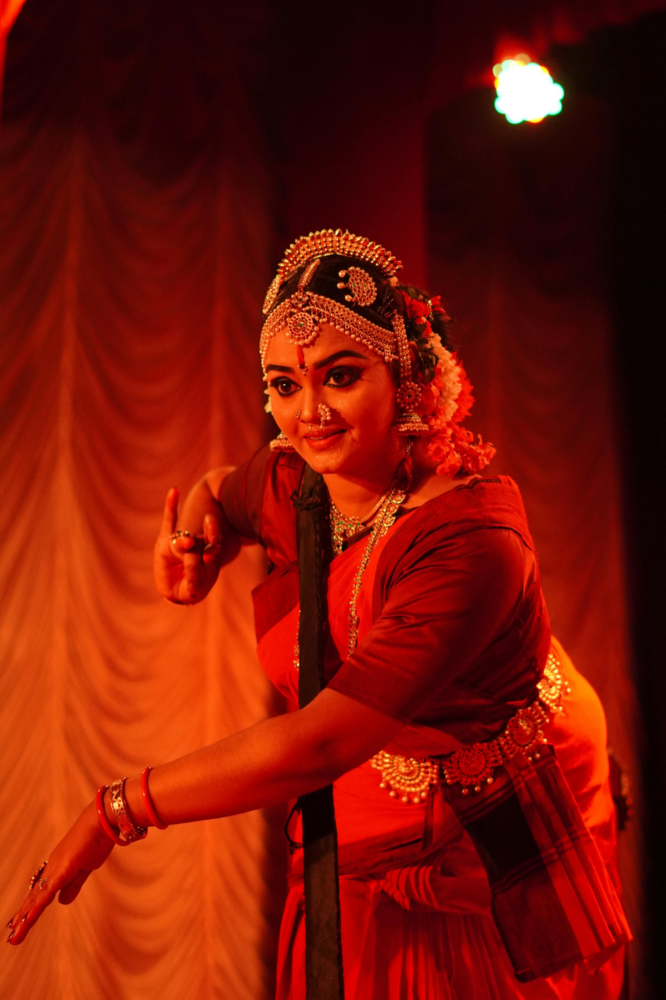

Le veena : musique, spiritualité et patrimoine de l’Inde
Un héritage musical au cœur des traditions de l’Inde du Sud
Un héritage musical au cœur des traditions de l’Inde du Sud
La veena est l'un des instruments les plus emblématiques de l'Inde du Sud.
Depuis le XVIIIe siècle, elle accompagne la musique carnatique et la danse classique Bharatanatyam, tout en portant une forte dimension spirituelle.
Cet instrument, symbole de dévotion et de savoir, incarne l'harmonie entre l'art et la religion.
À travers ce site, découvrez son histoire, sa construction, sa pratique musicale, ainsi que sa représentation dans l'art et la culture hindoue.
